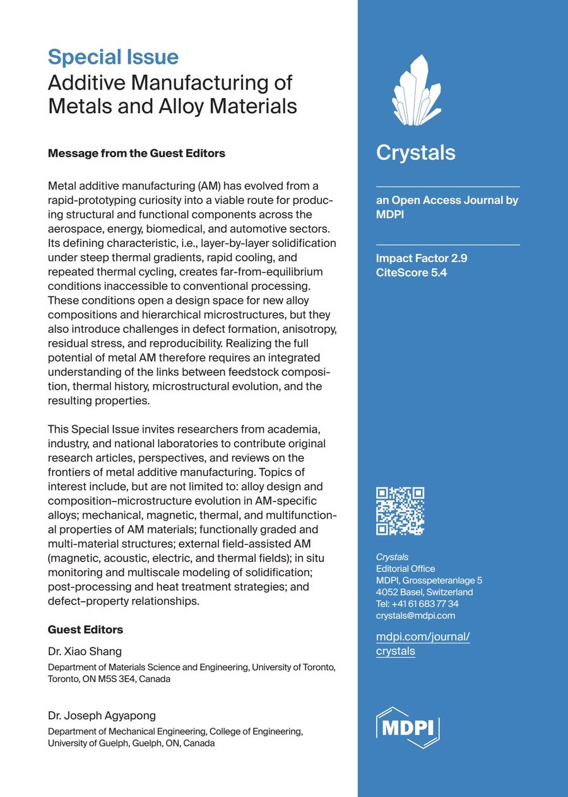
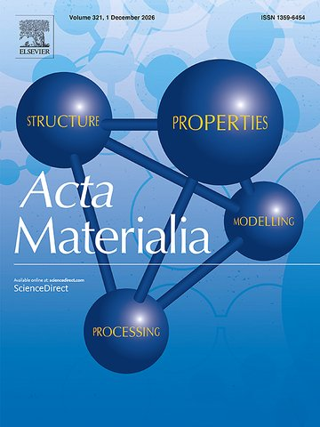
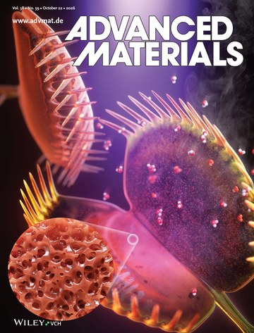
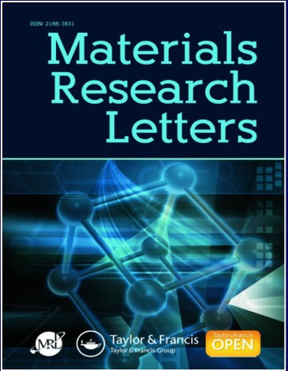
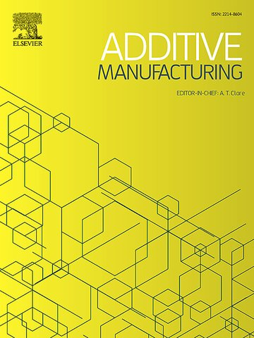
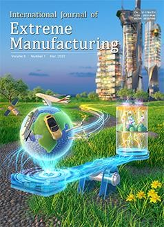
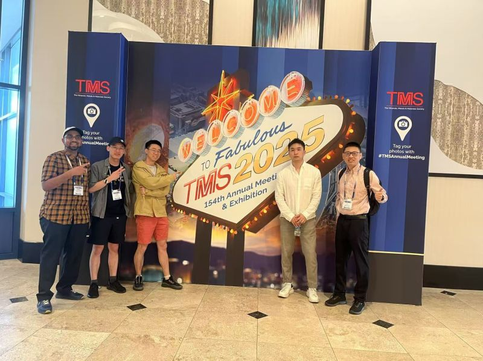
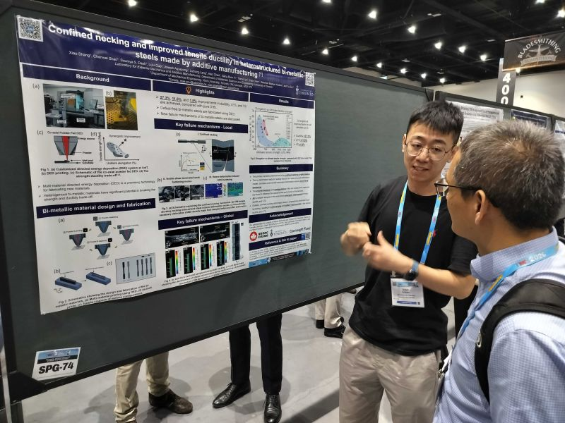

I edit and review for journals in my field, serve professional societies that connect academia and industry, have represented graduate students in university governance, and run a non-profit that helps early-career researchers find their way.

Crystals (MDPI). Guest Editors: Dr. Xiao Shang and Dr. Joseph Agyapong (University of Guelph).
The Special Issue invites original research, perspectives and reviews on the frontiers of metal additive manufacturing, including:

Acta Materialia
Advanced Materials
Materials Research Letters
Additive Manufacturing
International Journal of Extreme ManufacturingThe Minerals, Metals & Materials Society (TMS). Shape conference programs, panels and special topics.
Society of Manufacturing Engineers. Organize technical seminars, networking events and outreach that link academia and industry.


University of Toronto. Represented graduate students at department, faculty and university councils.
A non-profit run by early-career researchers that hosts talks on research and career advice by researchers from leading universities. Our perspective on the initiative was published as a commentary in Matter (2021).
I share code and tools so that others can build on our work.
A free tool that generates CRediT author-contribution statements for manuscripts.
Inverse process optimization for laser directed energy deposition (Additive Manufacturing, 2025).
Deep learning and genetic algorithm inverse design of 3D microstructures (Materials Today, 2023).